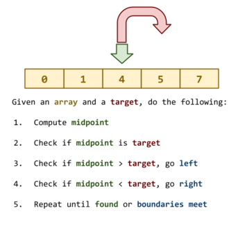

Everyone:
Next week, we will study linear search and binary search, two common algorithms, and discuss how to use them to implement sets, a common and useful abstract data type.
The focus of this reading is linear search, binary search, and sets.

The readings for this week are:
Once you have completed the readings, answer the following Reading 04 Quiz questions:
To submit your work, follow the same process outlined in Reading 01:
$ git checkout master # Make sure we are in master branch
$ git pull --rebase # Make sure we are up-to-date with GitHub
$ git checkout -b reading04 # Create reading04 branch and check it out
$ cd reading04 # Go into reading04 folder
$ $EDITOR answers.json # Edit your answers.json file
$ ../.scripts/check.py # Check reading04 quiz
Checking reading04 quiz ...
Q1 0.60
Q2 0.50
Q3 0.40
Q4 1.20
Q5 0.30
Score 3.00 / 3.00
Status Success
$ git add answers.json # Add answers.json to staging area
$ git commit -m "Reading 04: Done" # Commit work
$ git push -u origin reading04 # Push branch to GitHub
Once you have committed your work and pushed it to GitHub, remember to create a pull request and assign it to the appropriate teaching assistant from the Reading 04 TA List.